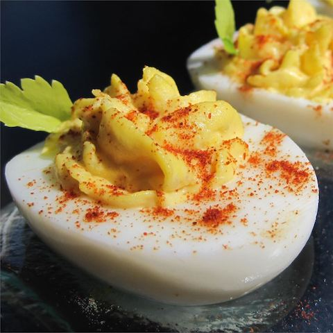

Deviled Eggs
Home

Description
The eggs are delicious, and it's easy to make more for large gatherings.
Ingredients
- 6 hard-cooked eggs
- 2 tablespoons mayonnaise
- 1 teaspoon white sugar
- 1 teaspoon white vinegar
- 1 teaspoon prepared mustard
- 1/2 teaspoon salt
- 1 tablespoon finely chopped onion
- 1 tablespoon finely chopped celery
- 1 pinch paprika, or to taste
Steps
-
Slice eggs in half lengthwise and remove yolks; set whites aside.
-
Mash yolks with a fork in a small bowl. Stir in mayonnaise, sugar, vinegar, mustard salt,
onion, and celery; mix well.
-
Stuff or pip egg yolk mixture into egg whites.
Sprinkle with paprika. Refrigerate until serving.